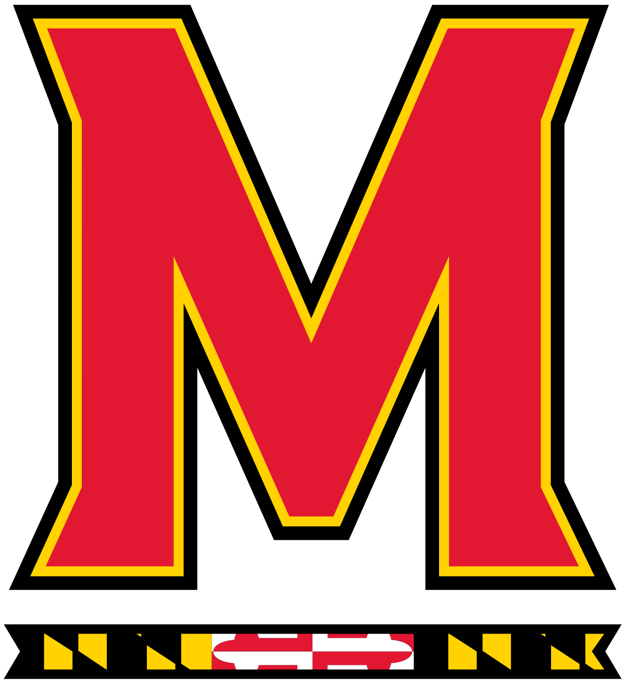

April Renee Howard

April Renee Howard
April Howard is a senior broadcast journalism student at the University of Maryland with an interest in entertainment production and sports broadcasting. April will be graduating Spring 2021. She is looking for jobs and internship opportunities that give her hands on experience in these fields of content creation. April is a native of the DC/Metro area. She has interned for the University of Maryland's Athletic Department as a Media Relations intern and is a recipient of a scholarship from SDXDC, a local professional chapter of the Society of Professional Journalists. She is also a member of the National Association of Black Journalists.
April is also a reporter for The Left Bench, a student-run sports show at the University of Maryland. April has covered various sports including tennis, basketball, volleyball, and football. April's internship experience with the University of Maryland's Athletic Department included transcribing quotes, covering social media accounts, and writing recaps.
April hopes to make a meaningful impact in the lives of others no matter what game she is covering or story she is telling.
Freelance work. Assisted with tweeting live coverage of the 2020 March on Washington.
I assisted SID (Sports Information Director) with setting up Media Room for media. I wrote recaps on the outcomes of games in various sports. I live tweeted, posted to social media, and interacted with followers to get engagements on sports pages. I updated games statistics in the online score tracker to allow followers to remain up to date on scores. I transcribed quotes from coaches and players to be released in a statement for media use.
I assist with the scripting, planning, and production of the bi-weekly sports news show. I cover assigned games by filming the entre game, taking notes on important plays/stats, and preparing a standup. I edit packages in a timely manner including: VO, VO/SOT, and standup and publish them to social media platforms.
I create promotion plans for events/activities and ensure everyone is adhering to posting content on all social media platforms. I create flyers and videos to promote events/activities on all social media platforms. I analyze engagements and find creative ways to promote events/activities on all social media platforms. I create new ideas/executive old ideas to increase social media engagement.

Reporter and anchor for an award-winning, on-campus, sports publication.
Experienced with using Adobe Premiere Pro to create packages in a timely manner.